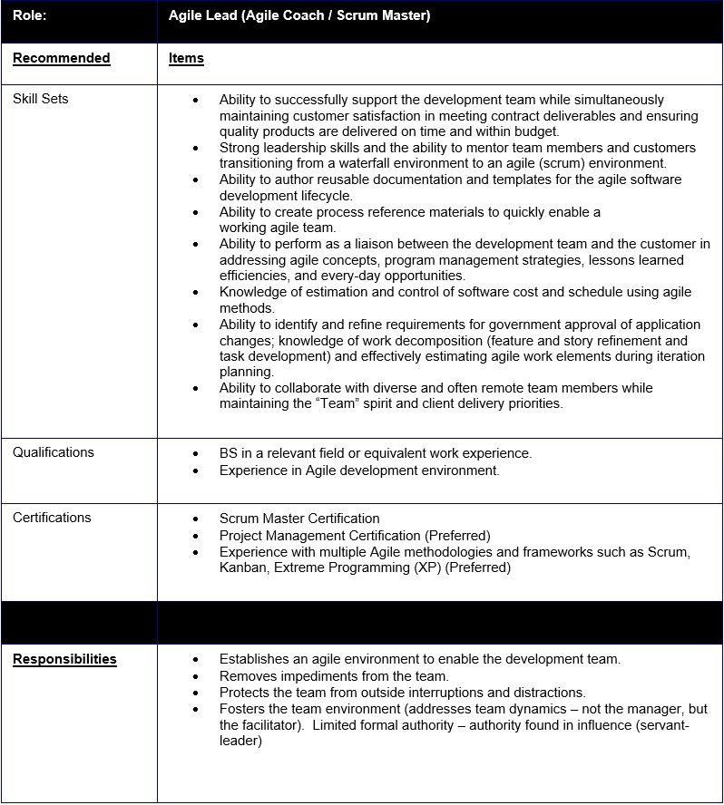
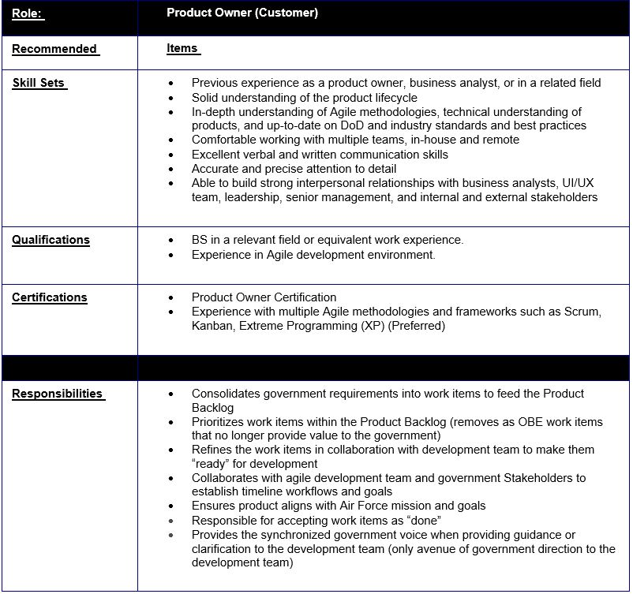
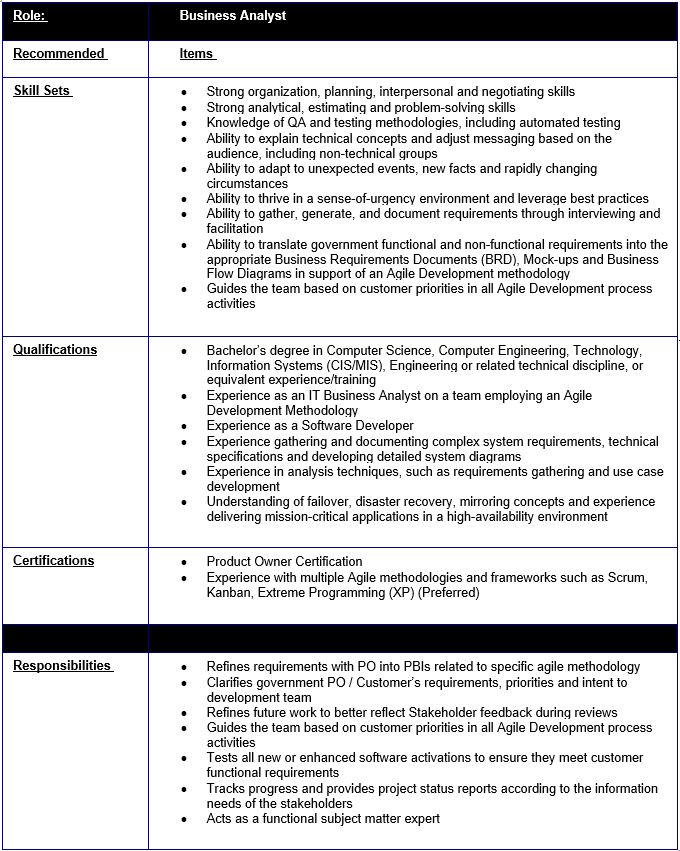

BES Playbooks
BES Playbooks
CDRL 0001 Agile - 1 Overview
-2 Agile Transformation
-3 Applying Agile Methods and Mindset Within The Air Force
-4 Agile Architecture
-5 Agile Framework
-6 Appendix A - Key Events Plays
-7 Appendix B - Key Personnel Plays
7 APPENDIX B - KEY PERSONNEL PLAYS
7.1 Agile Lead
7.2 Product Owner
7.3 Business Analyst
-8 Appendix C - Key Links
-9 Appendix D - Agile Terminology
-10 Appendix E - Glossary
CDRL 0002 Automated Testing - 1 Overview
-2 Test Automation
-3 Roles in Test Automation
-4 Scope of Test Automation
-5 Developing a Test Automation Solution
-6 Migrating From Manual to Automated Testing
-7 Test Automation Development Lifecycle
-8 Effectiveness Measurements
-9 Reporting
-10 Looking Ahead
-Appendix A Resources
-Appendix B Test Tools
BES Playbooks
Docs
»
-7 Appendix B - Key Personnel Plays
7 APPENDIX B - KEY PERSONNEL PLAYS
7.1 Agile Lead

7.2 Product Owner

7.3 Business Analyst

« Previous
Next »